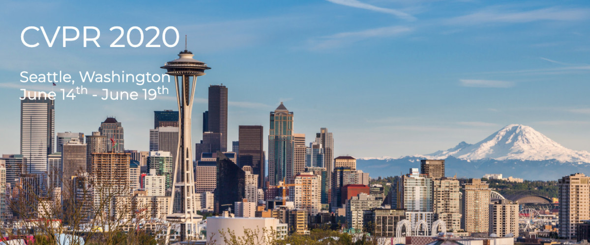

|
Joint Workshop on Efficient Deep Learning in Computer Vision CVPR Workshop, 2020 |
|
 |
Workshop on Efficient Deep Learning for Computer Vision
Full day: June 15, 2020
Computer Vision has a long history of academic research, and recent advances in deep learning have provided significant improvements in the ability to understand visual content. As a result of these research advances on problems such as object classification, object detection, and image segmentation, there has been a rapid increase in the adoption of Computer Vision in industry; however, mainstream Computer Vision research has given little consideration to speed or computation time, and even less to constraints such as power/energy, memory footprint and model size. The workshop has three main goals on solving and discussing efficiency in Computer Vision:
First, the workshop aims to create a venue for a consideration of the new generation of problems that arise as Computer Vision meets mobile and AR/VR systems constraints, to bring together researchers, educators and practitioners who are interested in techniques as well as applications of compact, efficient neural network representations. The workshop discussions will establish close connection between researchers in machine learning and computer vision communities and engineers in industry, and to benefit both academic researchers as well as industrial practitioners.
Second, the workshop aims at reproducibility and comparability of methods for compact and efficient neural network representations, and on-device machine learning. Thus a set of benchmarking tasks (image classification, visual question answering) will be provided together with defined data sets, in order to compare the performance of neural network compression methods on the same networks. Submissions are encouraged (but not required) to use these tasks and data sets in their work. Also, contributors are encouraged to make their code available.
Third, the workshop aims to discuss the next steps in developing efficient feature representations from three aspects: energy efficient, label efficient, and sample efficient. Despite DNNs are brain-inspired and can achieve or even surpass human-level performance on a variety of challenging computer vision tasks, they continue to trail humans’ abilities in many aspects, such as high energy-efficiency and the ability to perform low-shot learning (learning novel concepts from very few examples). Therefore, the next generation of feature representation and learning techniques should aim to tackle recognition tasks with significantly reduced computational complexity, using as little training data as people need, and to generalize to a range of different tasks beyond the one task the model was trained on.
li.liu@oulu.fi
yu.liu@esat.kuleuven.be
wanli.ouyang@sydney.edu.au
lujiwen@tsinghua.edu.cn
mkp@ee.oulu.fi
vangool@vision.ee.ethz.ch
vajdap@fb.com
stzpz@fb.com
petewarden@google.com
kurt.keutzer@gmail.com
jdekhtiar@nvidia.com
wojciech.samek@hhi.fraunhofer.de
yingyan.lin@rice.edu
werner.bailer@joanneum.at
8:50-9:00 Welcome by organizers
9:00-9:30 Invited talk: Prof. Philip Torr (Oxford University)
9:30-10:00 Invited talk: Prof. Nic Lane (Oxford University)
10:00-10:30 Café break
10:30-10:40 Submitted paper presentation
10:40-10:50 Submitted paper presentation
10:50-11:00 Submitted paper presentation
11:00-11:30 Keynote talk: Prof. Song Han (MIT)
11:30-12:00 Invited talk: Prof. Diana Marculescu (CMU)
12:00-12:10 Submitted paper presentation
12:10-12:20 Submitted paper presentation
12:20-12:30 Submitted paper presentation
12:30-13:30 Lunch break
13:30-14:00 Keynote talk: Prof. Bill Dally (Stanford)
14:00-14:30 Invited talk: Prof. Chelsea Finn (Stanford)
14:30-14:40 Submitted paper presentation
14:40-14:50 Submitted paper presentation
14:50-15:00 Submitted paper presentation
15:00-16:00 Poster session by paper submission
16:00-17:30 Panel presentations and discussion on Efficient deep learning algorithms. Moderator: Luc Van Gool
17:30-17:45 Closing awards for best paper and best poster